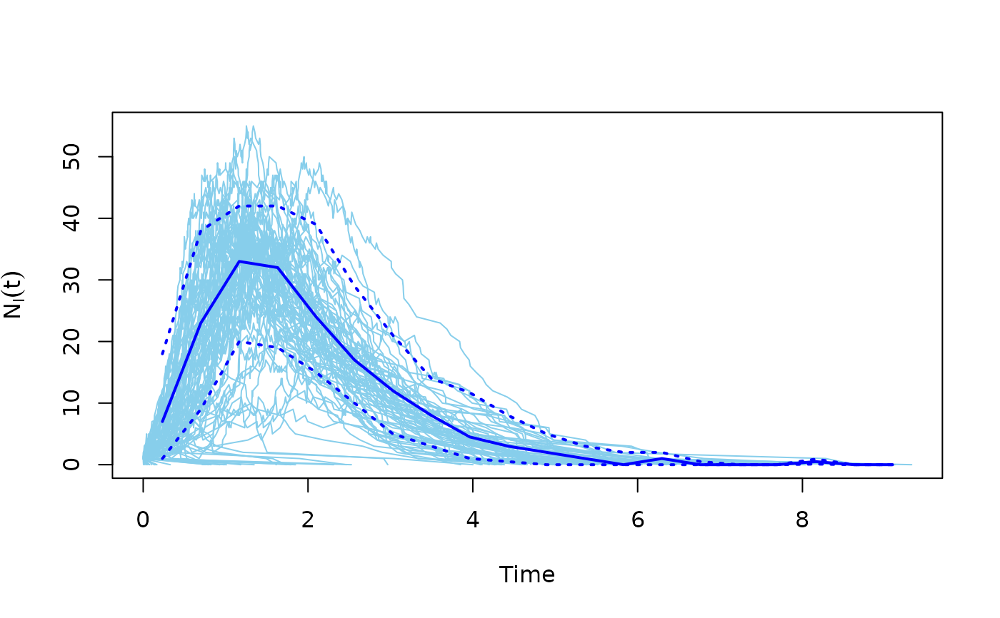

This function can conveniently plot the results of multiple SIR model simulations.
Arguments
- x
The output of the SIR simulation, coming from the
sir()function.- comp
Character scalar, which component to plot. Either ‘NI’ (infected, default), ‘NS’ (susceptible) or ‘NR’ (recovered).
- median
Logical scalar, whether to plot the (binned) median.
- quantiles
A vector of (binned) quantiles to plot.
- color
Color of the individual simulation curves.
- median_color
Color of the median curve.
- quantile_color
Color(s) of the quantile curves. (It is recycled if needed and non-needed entries are ignored if too long.)
- lwd.median
Line width of the median.
- lwd.quantile
Line width of the quantile curves.
- lty.quantile
Line type of the quantile curves.
- xlim
The x limits, a two-element numeric vector. If
NULL, then it is calculated from the data.- ylim
The y limits, a two-element numeric vector. If
NULL, then it is calculated from the data.- xlab
The x label.
- ylab
The y label. If
NULLthen it is automatically added based on thecompargument.- ...
Additional arguments are passed to
plot(), that is run before any of the curves are added, to create the figure.
Details
The number of susceptible/infected/recovered individuals is plotted over time, for multiple simulations.
References
Bailey, Norman T. J. (1975). The mathematical theory of infectious diseases and its applications (2nd ed.). London: Griffin.
Author
Eric Kolaczyk (http://math.bu.edu/people/kolaczyk/) and Gabor Csardi csardi.gabor@gmail.com.
Examples
g <- sample_gnm(100, 100)
sm <- sir(g, beta = 5, gamma = 1)
plot(sm)
